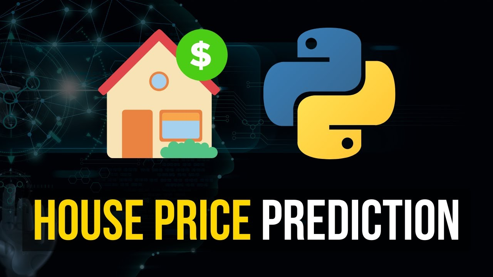

My Projects
Customer Segmentation Using K-Means Clustering
This project is a practical implementation of unsupervised learning techniques and demonstrates how clustering can be used to derive actionable insights from customer data.
View Project

House Price Prediction
This project serves as a practical application of linear regression and demonstrates how predictive modeling can solve real-world problems in the real estate industry.
View ProjectSuper Store Sales Dasboard
Developed an interactive dashboard in Power BI to analyze sales, profits, and customer segments. Leveraged DAX queries to calculate key metrics and provide actionable insights through dynamic visuals. This project highlights my skills in data visualization and business intelligence for driving data-driven decisions.
View Project